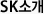
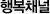
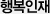
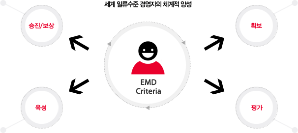
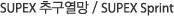

SK의 인재육성 Pipeline : EMD System
EMD(Executive Management & Development) System은 그룹 및 관계사의 경영전략을 주도적으로 수행해 나갈 경영자를 계획적, 체계적으로 발굴/육성하기 위한 제도로서, 1994년에 제도 수립 이후 현재까지 SK 인재육성의 핵심 제도로 운영되고 있습니다.

EMD Criteria (임원 자격요건)
EMD Criteria는 임원 및 임원후보의 발굴, 육성 등 제반 EMD 활동의 기초가 될 뿐 아니라, SK그룹의 모든 임직원이 스스로 자신의 역량을 개발/성장시키는데 중요한 기준 및 지침으로 활용됩니다.
- ㆍ회사의 원칙/기준에 따라 정직하게
행동하고,공사를 명확히 구분 - ㆍ구성원에 대한 신뢰와 존중을 바탕으로 협력

- ㆍ항상 솔선수범하고 자신뿐만 아니라 구성원들의 열정 제고


- ㆍ본인의 Story를 가지고 가치 있는 전략적 대안 창출

- ㆍ항상 현재에 대한 문제의식을 가지고 새로운 시도와 가치있는 전략적 대안 창출


- ㆍ부하 직원의 새로운 아이디어 촉진 및 자신의 노하우,정보, 경험을 적극적으로 공유

- ㆍ적극적이고 의도적으로 새롭고 난이도 있는 업무를 부여
- ㆍ부하의 성장에 관심을 가지고 적극적으로 지도

- ㆍGlobal 시장에서의 새로운 사업 기회 발굴과 수행 및 구성원 독려


육성의 가장 핵심이 되는 것은 "일을 통한 육성"입니다. 진정한 경영자/전문가는 자신이 맡은 일을 세계 최고 수준 이상으로 할 수 있도록 노력하고 추구하는 과정을 통하여 양성됩니다. SK는 다양한 직무경험을 바탕으로 한 ‘일을 통한 육성’을 기본으로 하여 다양한 교육 프로그램과 자기계발을 통하여 구성원들을 분야별 전문가/최고 경영자로 육성하기 위해 노력하고 있습니다.
교육 프로그램은 SK 그룹 연수원인 SK Academy와 각 관계사가 분담하여 시행하고 있으며, 특히, 해외 MBA과정, 지역전문가 과정, 해외의 유수 대학연구기관 등에 파견하는 분야별 전문가 과정 등 수준 높은 교육 프로그램들이 미래 SK의 Global Leader를 위해 준비되어 있습니다.

-
 GLDP
GLDP- ㆍGlobal Leadership
Development Program
- * Global Program for Executives
(임원 단기 해외 과정)
* General Mgmt. :
INSEAD 단기 과정 등
(France & Abudabi)* 리더십 :
Harvard Business School
단기 과정 등* 전 략 :
London Business School
단기 과정 등 - ㆍGlobal Leadership
-
 GLP
GLP- ㆍGlobal Leader Program
* 미국 과정 :
Georgetown University* 중남미 과정 :
Univ. of Texas In Austin -

- ㆍ국내외 학위과정
(MBA, Ph.D) - ㆍProfessional 과정
(HR, Legal, Finance 등) - ㆍ지역전문가 과정
- ㆍ국내외 학위과정